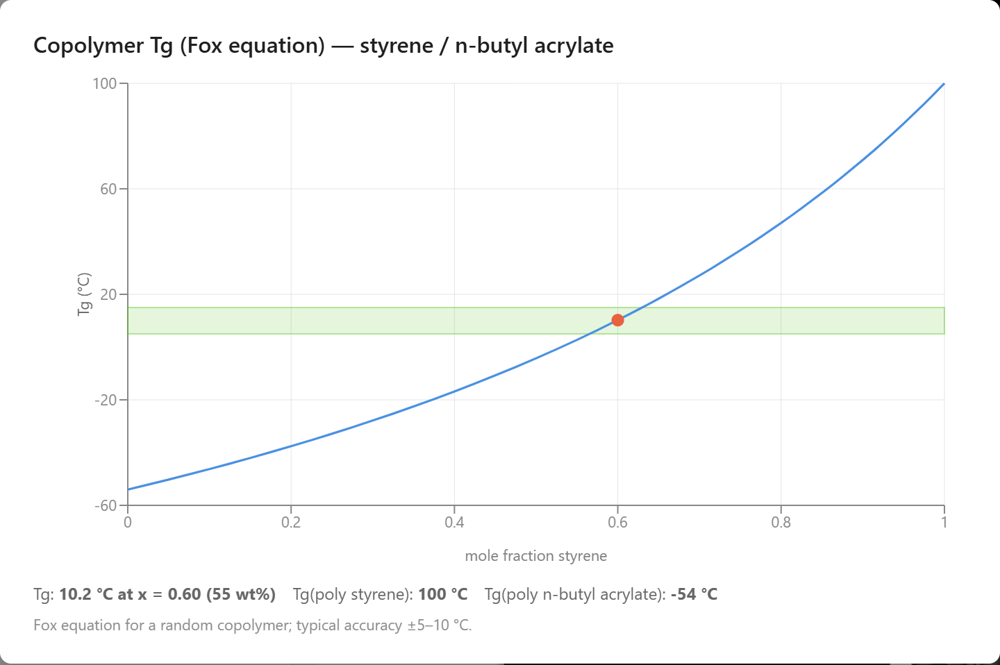

Building Polymer Chains in AIMS
Link monomers into chains, copolymers, and branched molecules atom by atom, then measure and design them with an AI agent.
Plastic bags, foam cups, nonstick pans, tires, wall paint, and wood glue are all made of polymers: long molecules built by linking many copies of a small molecule, the monomer. A polyethylene molecule in a plastic bag holds thousands of linked ethylene units. Textbooks draw such a molecule as a repeat unit in brackets with a subscript, –[CH2–CH2]n–, which leaves out what the chain looks like in space. The Polymer Builder in AIMS builds the chain itself, with every atom in place, in a web browser. A student picks one or more monomers, sets how many units to link and how to arrange them, and the chain appears in the lab, ready for a molecular dynamics simulation. An AI agent does the same work from a plain-language request in the chat, measures the chains it builds, and designs new ones to a target. In the window below, the gallery holds eight monomers, and the lab holds a chain of PET, the plastic of soda bottles, built from ten units each of terephthalic acid and ethylene glycol.
A PET chain of ten terephthalic acid and ten ethylene glycol units, 223 atoms. Press Play to watch the chain move at room temperature.
From Monomer to Chain
Ethylene, CH2=CH2, has a double bond between its two carbon atoms. When ethylene polymerizes, that double bond opens into a single bond, and each carbon uses the freed electrons to bond to a carbon of the next unit. Every atom of the monomer stays in the chain, so a chain of n ethylene units has the formula of n ethylene molecules plus the two atoms that cap its ends. This is addition polymerization, and it makes most of the plastics in daily use from monomers with a C=C group: vinyl chloride makes PVC, and styrene makes polystyrene. The two carbons of the double bond are the places where a unit links to its neighbors, the head and the tail of the unit. The Polymer Builder finds them in any monomer with a C=C outside a ring and opens the double bond when it builds the chain, so a ring such as the benzene ring of styrene stays intact and hangs off the chain as a side group. Butadiene, CH2=CH–CH=CH2, has two double bonds in a row. It links through its two end carbons, and the remaining double bond moves to the middle of the unit, so each unit of polybutadiene keeps one C=C, as in the rubber of tires. The builder places a hydrogen atom on each end of the finished chain.
The table lists the seven polymers that the vinyl monomers and butadiene in the first two examples make, with the number of atoms in a chain of ten units. The number of atoms matters because a simulation in a browser has a budget: the lab is meant for up to 500 atoms, and the builder warns before a chain goes over that.
| Monomer | Polymer | Where it is used | Atoms in 10 units |
|---|---|---|---|
| Ethylene | Polyethylene | Bags, bottles, film | 62 |
| Tetrafluoroethylene | Polytetrafluoroethylene | Nonstick coatings | 62 |
| Vinyl chloride | Poly(vinyl chloride) | Pipes, window frames | 62 |
| Acrylonitrile | Polyacrylonitrile | Acrylic fibers | 72 |
| Butadiene | Polybutadiene | Tires | 102 |
| Vinyl acetate | Poly(vinyl acetate) | Wood glue | 122 |
| Styrene | Polystyrene | Foam cups, cases | 162 |
Condensation Polymers
Polyesters and nylons form another way. Their monomers carry reactive groups at both ends, and each link joins an acid group, –COOH, of one monomer to an alcohol group, –OH, or an amine group, –NH2, of another. The acid loses its OH and the alcohol or amine loses an H, and the two leave together as a molecule of water. This is condensation polymerization, and the link it forms is an ester, –COO–, or an amide, –CONH–. Terephthalic acid has an acid group at each end of a benzene ring, and ethylene glycol, HO–CH2–CH2–OH, has an –OH group at each end. Linked in alternating order, they make polyethylene terephthalate, PET, the polyester of soda bottles and polyester fabric. Adipic acid and hexamethylenediamine make nylon 6,6 the same way through amide links. The Nylon 6,6 example builds a chain of eight units of each, C96H178N16O17, with 307 atoms.
The Polymer Builder recognizes the acid, alcohol, and amine groups of a monomer and links the units through them. At every link it removes the OH of the acid and an H of the alcohol or amine, so the chain in the lab of the first example has the formula of its 20 monomers minus 19 molecules of water: C100H82O41, with 223 atoms. Its two ends still carry an acid group and an –OH group, where the chain could grow further. This is the chain in the first window of this article, where the ester links show as pairs of red oxygen atoms between each benzene ring and the next CH2–CH2 unit. Two acid groups cannot link, so a diacid has to alternate with a diol or a diamine, and the builder refuses a sequence that puts two acids side by side. A monomer with an acid group at one end and an alcohol or amine at the other, such as lactic acid, polymerizes on its own: lactic acid makes poly(lactic acid), a plastic made from plants. In the same way, 6-aminohexanoic acid, with an acid group at one end and an amine group at the other, makes nylon 6. The Nylon 6 example builds a chain of 16 units of it, with the same formula as the nylon 6,6 chain, C96H178N16O17, and the same 307 atoms. The two chains differ in the direction of their amide links: in nylon 6 every link points the same way along the chain, and in nylon 6,6 the links alternate in direction.
Laying Out the Chain
The builder adds one unit at a time. Each new unit bonds to the end of the chain at the position where the previous unit's end hydrogen was, so every bond angle where two units meet is the angle of a tetrahedral carbon, about 109.5°. The new unit can still turn about the bond that joins it to the chain. Rotation about a single bond is described by its dihedral angle, and a carbon chain has three low-energy choices: trans, with the chain continuing straight ahead in a zigzag, and two gauche positions, turned 120° to either side. The builder takes trans unless the new unit would bump into atoms already placed, in which case it takes the gauche position that bumps least. A polyethylene chain built this way is a straight zigzag. A setting called torsion jitter adds a small random twist at every bond, and the chain starts out slightly bent.
In a vinyl polymer such as polystyrene, every second carbon of the backbone carries the side group, and the side group can point to either side of the zigzag. The arrangement of these sides along the chain is the tacticity of the polymer. In polystyrene made by the common industrial process, the sides are random, and the polymer is called atactic. The builder chooses the side of each unit at random by default, so its chains are atactic too. The Build Chain dialog also builds isotactic chains, with every side group on the same side, and syndiotactic chains, with the sides alternating. Before the chain goes into the lab, the builder minimizes its energy, moving the atoms until the forces on them are close to zero. A simulation of the chain then starts at an energy minimum.
Copolymers
A copolymer is built from two or more kinds of monomer, and the order of the units along the chain changes its properties. The builder offers the three standard sequences: alternating (ABABAB…), random, in which each unit is drawn at random with chosen proportions, and block (AAAABBBB…), in which runs of one monomer follow runs of another, with a chosen length for each run. The Build Chain dialog shows the sequence as a string of letters before the chain is built.
The second example builds the molecule that holds ABS together, the hard plastic of toy bricks and appliance housings. ABS is made by polymerizing styrene and acrylonitrile in the presence of polybutadiene rubber. Some of the growing styrene–acrylonitrile chains, called SAN, attach to the rubber chains as branches, and the result is a graft copolymer: a backbone of polybutadiene with side chains of SAN. In the plastic, the rubber gathers into small particles inside a hard matrix of SAN, and the grafted chains bind the particles to the matrix, which makes ABS tough.
The example builds a short stretch of this molecule: a polybutadiene backbone of 12 units with a SAN side chain of six units on every fourth backbone unit. In the Build Chain dialog, butadiene is the backbone monomer, styrene and acrylonitrile are the side-chain monomers, and each side-chain unit is drawn at random, 60 styrene to 40 acrylonitrile, which is about three parts styrene to one part acrylonitrile by weight. In this chain the draw gave nine units of each. The molecule has 329 atoms, C147H173N9, and each of its 12 butadiene units keeps one C=C in the backbone.
A polybutadiene backbone of 12 units with three side chains of styrene and acrylonitrile units in random order. The nitrogen atoms of the acrylonitrile units are blue.
Chain Architectures
Many polymers branch. The way units connect, the architecture of the polymer, affects how the molecules pack and flow. Branched polyethylene, the low-density polyethylene of plastic bags, is softer than the linear kind because its branches keep the chains from packing closely. The builder makes seven architectures:
Linear: one chain with two ends.
Ring: the two ends joined into a closed loop, a cyclic polymer.
Star: two to twelve arms joined at one central atom. Star polymers are used as additives that keep motor oil from thinning too much when it gets hot.
Comb: side chains attached at regular intervals along a backbone. When the side chains are made of a different monomer, the molecule is a graft copolymer, like the ABS molecule above. The backbone and the side chains can each be built from one monomer or from several.
Branched: side chains attached at random positions along a backbone, with a chosen chance of a branch at each unit.
Dendritic: a regular tree. Arms grow from a central atom, and the tip of each arm splits into new arms, generation after generation. Such molecules are called dendrimers.
Hyperbranched: a tree in which each tip splits only with a chosen probability, so the branching is irregular.
Every architecture is built the same way as a linear chain, one unit at a time, and each branch bonds to a carbon at the position of a hydrogen it replaces, so every carbon keeps four bonds. The one exception is the central atom of a star with more than four arms, which stands in for the small core molecule that real star polymers grow from. The number of atoms grows quickly with branching: a dendrimer gains arms with every generation, and the atom count in the dialog shows how close a design is to the 500-atom budget.
How Big Is a Chain?
A polymer chain in a melt or a solution does not stay straight. Its bonds take trans and gauche positions at random, and the chain folds into a loose coil. Two numbers describe its size. The end-to-end distance is the distance between its two ends, and the radius of gyration, Rg, is the root-mean-square distance of its atoms from their center of mass. The Polymer tab of the analysis panel plots both while a simulation runs, and it also computes the persistence length, the distance along the chain over which its direction stays about the same: a measure of how stiff the chain is.
How Rg grows with the number of units N is one of the basic results of polymer physics. For long chains, Rg grows as Nν. A chain whose parts could pass through one another, an ideal chain, has ν = 1/2, the exponent of a random walk. A real chain cannot occupy the same space twice, and that makes it swell: it behaves like a self-avoiding walk, with ν = 0.588, the value computed by Le Guillou and Zinn-Justin in 1977. A collapsed globule has ν = 1/3, and a stiff rod has ν = 1.
A student can ask the agent to measure ν. The agent builds polyethylene chains of 5, 10, 15, 20, 30, and 40 units, two of each length, gives each chain a shape, runs a short simulation at 300 K, and fits a power law to Rg against N. The shapes come from a step outside the simulation: a bond changes between trans and gauche too rarely to sample many shapes in the few picoseconds a browser can simulate, so the agent sets every backbone bond to trans or one of the two gauche positions at random and rejects any choice that makes the chain run into itself. The resulting chains are a sample of the shapes the chain can take without overlapping. Every position is equally likely in this sample, while a real chain at 300 K favors trans, the position of lowest energy. Two chains per length are few, and the fitted exponent changes noticeably from one run to the next. With six chains per length, two runs gave ν = 0.62 and 0.60, and the power law matched the points closely in both (r2 = 0.996). Both values are close to 0.588 and well above 1/2: the chains swell as a self-avoiding walk does. Chains of 40 units are short, and the stiffness of the zigzag over a few units can raise the exponent of a short chain a little. The theoretical values hold for long chains.
Branching makes a polymer more compact. The Polymer Architectures example compares four polymers of about 48 ethylene units each: a linear chain, a star of four arms of 12 units, a comb with six side chains of four units on a backbone of 24, and a dendrimer that branches at every unit. The agent draws 1,000 shapes of each in the same way and averages Rg: 12.9 Å for the linear chain, 10.3 Å for the comb, 10.1 Å for the star, and 6.4 Å for the dendrimer. The usual measure of the effect is g, the mean square Rg of the branched polymer divided by that of the linear one. For a star of f arms whose chains could pass through one another, Zimm and Stockmayer showed in 1949 that g = (3f − 2)/f2, which is 0.625 for four arms. The star in the example gives g = 0.60, close to that value, although its arms are only 12 units long and cannot overlap.
Designing a Copolymer: A Latex Paint Binder
Wall paint is a suspension of tiny polymer particles in water, a latex. As the water evaporates, the particles must fuse into a continuous film, and they fuse only if the polymer is above its glass-transition temperature, Tg, where it changes from hard and glassy to soft and rubbery. If Tg is too low, the dried paint stays tacky. If it is too high, the paint dries into a powder that cracks. Paint chemists set Tg by mixing a hard monomer with a soft one. Polystyrene is glassy at room temperature, with Tg = 100 °C, and poly(n-butyl acrylate) is rubbery, with Tg = −54 °C.
The third example gives the agent a design task: a random copolymer of styrene and n-butyl acrylate whose Tg lies between 5 and 15 °C, so that the paint forms a film at room temperature. The agent computes Tg with the Fox equation, 1/Tg = w1/Tg1 + w2/Tg2, in which w1 and w2 are the weight fractions of the two monomers and the temperatures are in kelvin. A composition of 60 styrene units to 40 butyl acrylate units, 55% styrene by weight, gives Tg = 10.2 °C, inside the target range, and the agent reports the design as met after one try. It then builds a 20-unit chain with that composition, 12 styrene and 8 butyl acrylate units in random order, 362 atoms in all, and loads it into the lab.

The chart in the chat draws the whole Fox curve with the target range shaded. The curve bends below a straight line between the two homopolymers because the Fox equation averages the inverses of the temperatures. The Fox equation is an estimate, typically good to 5 to 10 °C, and it applies to random and alternating copolymers. In a block copolymer, the blocks of each kind gather into separate regions, and each region keeps its own Tg.
The design conversation and the 20-unit styrene–n-butyl acrylate chain it produced. The oxygen atoms of the butyl acrylate units are red.
Try It
Go to AIMS and open the list of examples, with the lightbulb button on the toolbar or the Examples item in the main menu (☰). The six examples are in the Chemistry group. Open one, open the chat, and type a prompt below. The chat of the latex example already holds the answers to its first two prompts.
Polymers
- “Build a 20-unit polystyrene chain.”
- “Build a PET chain of 20 units from terephthalic acid and ethylene glycol.”
- “Build a star polymer of polyethylene with four arms of six units.”
- “How does the radius of gyration of polyethylene scale with chain length?”
Copolymers
- “Build a block copolymer of styrene and butadiene with blocks of five units.”
- “Build an ABS graft copolymer with a polybutadiene backbone of 12 units and styrene–acrylonitrile side chains of six units.”
Nylon 6,6
- “Build a polyester of 16 units from adipic acid and ethylene glycol.”
- “How does the radius of gyration of nylon 6,6 scale with chain length?”
Nylon 6
- “Build a poly(lactic acid) chain of 20 units from lactic acid.”
- “Build a nylon 6,6 chain of 16 units from adipic acid and hexamethylenediamine.”
Polymer Architectures
- “Compare a linear chain with stars of 3, 6 and 8 arms.”
- “Add styrene to the gallery, then compare the architectures of polystyrene with 24 units each.”
Designing a Latex Paint Binder
- Monomers — “Add styrene and n-butyl acrylate to the gallery.”
- Design — “Design a styrene / n-butyl acrylate random copolymer for a latex paint binder that forms a film at room temperature: its glass-transition temperature must be between 5 and 15 °C. Then build a 20-unit chain with that composition and load it into the lab.”
- A harder binder — “Now make its glass-transition temperature between 20 and 30 °C.”
What the Builder Produced
- PET — ten units each of terephthalic acid and ethylene glycol joined by 19 ester links, C100H82O41, with 223 atoms and 19 molecules of water released.
- Seven addition polymers — from the vinyl monomers and butadiene in the gallery, with the side groups on random sides of the chain.
- A graft copolymer — a stretch of the ABS molecule: a 12-unit polybutadiene backbone with three styrene–acrylonitrile side chains, 329 atoms.
- Chain size — polyethylene chains of 5 to 40 units grow as N0.64 with six chains per length, a swollen coil like a self-avoiding walk.
- A designed binder — a 60:40 styrene–n-butyl acrylate copolymer with a computed Tg of 10.2 °C, inside the 5 to 15 °C target, built as a 362-atom chain.
Conclusion
This article uses the Polymer Builder to illustrate a new way to learn science: students converse with an AI agent that turns a plain-language request into a molecule and a molecular dynamics experiment, and hands back measured data. The bracketed repeat unit of the textbook becomes a chain that students can build, turn in three dimensions, and watch move: how a double bond opens to link units and how an acid and an alcohol join and release water, how copolymer sequences and branching change a molecule, how the size of a chain grows with its length, and how a chemist picks a composition to meet a target. By pairing a physically grounded simulation with an AI that can set it up and run it, AIMS turns a student's curiosity into a genuine scientific investigation of the materials they use every day.
← Back to AIMS